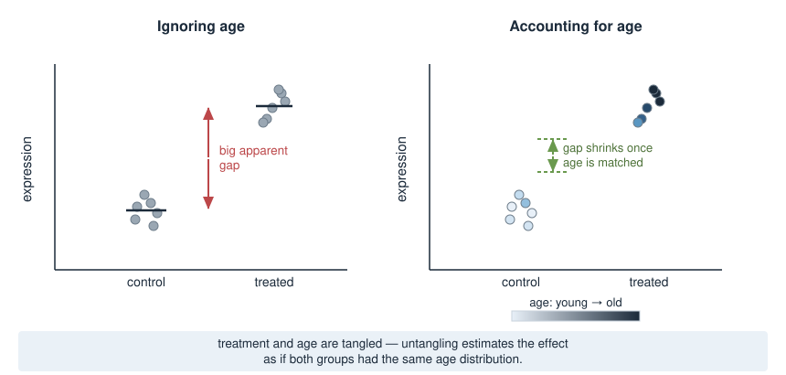
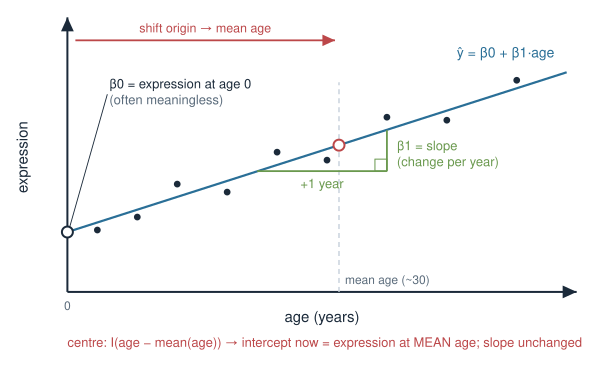
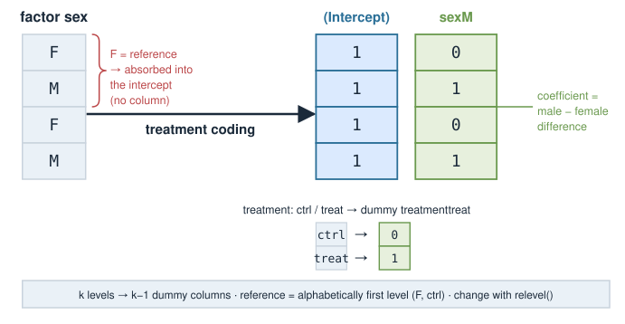
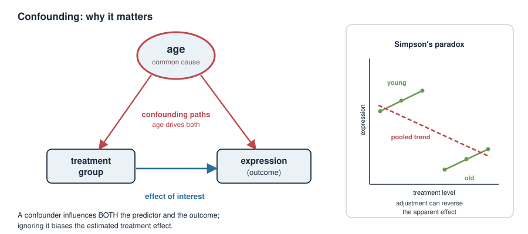
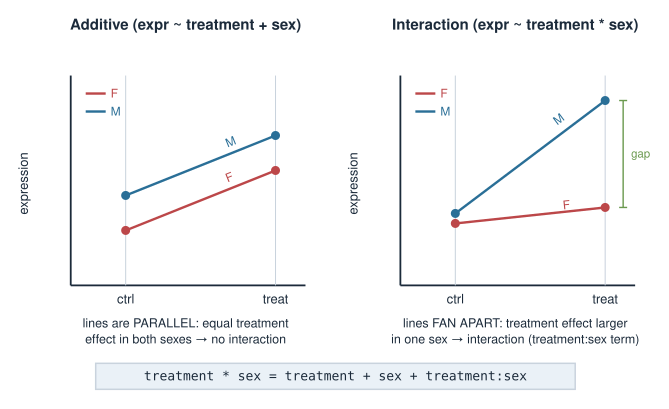
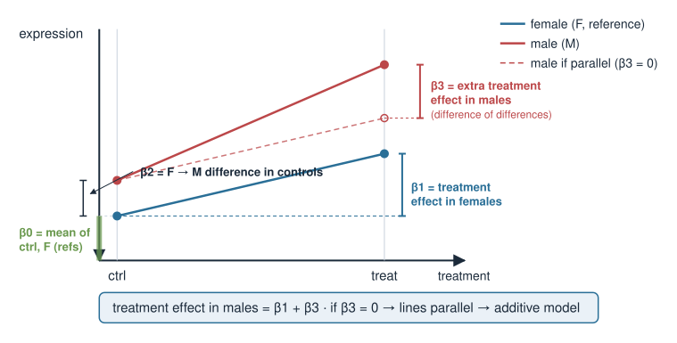
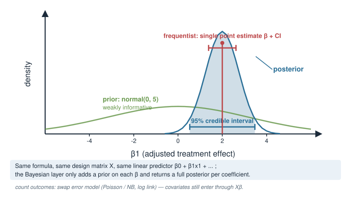

Real experiments are never clean. Your samples differ in age, sex, BMI, batch, and treatment all at once. Today we learn how to put those extra variables — covariates — into a model, so the effect you care about is not corrupted by the ones you don’t.
What a covariate is, and the difference between a variable of interest and a nuisance variable.
How a model formula (y ~ treatment + age) becomes a design matrix\(X\) — the bridge back to Matrices as transformations.
Continuous vs categorical predictors, and what each coefficient means.
Confounding: why leaving a covariate out can flip your conclusion, and how adjustment fixes it.
Interactions: when a treatment works differently in different groups.
Provisional block
This Bayesian statistics block is provisional and may move to a later statistics / machine-learning course. The ideas here (design matrices, adjustment, interactions) are core to any linear model — Bayesian or frequentist — so they are worth your time regardless of where the block finally lands.
A biology picture first
You run an RNA-seq experiment: treated vs control mice, measuring one gene. Treated mice show higher expression. Success?
But the treated mice were, by accident, mostly old, and the controls mostly young.
This gene also rises naturally with age.
So is the difference due to the treatment, or due to age?
With the data as-is you cannot tell — treatment and age are tangled. The whole point of covariates is to untangle them: estimate the treatment effect as if the two groups had the same age distribution.

What is a covariate?
A covariate is any measured variable you put into the model alongside your predictor of interest.
Two roles, same machinery:
Variable of interest — the effect you actually want to estimate (e.g. treatment).
Nuisance / adjustment variable — something that also affects the outcome and that you want to control for so it doesn’t distort the effect of interest (e.g. age, sex, batch).
The model does not know which is which — you decide by how you interpret the coefficients. Mechanically, every covariate is just another column in the design matrix.
The model formula
R (and Bayesian tools built on the same syntax) describes a model with a formula: outcome on the left, predictors on the right.
# outcome ~ predictor(s)expr ~ treatment # effect of treatment onlyexpr ~ treatment + age # treatment, adjusting for ageexpr ~ treatment + age + sex # adjust for age and sex
Behind every formula sits a linear predictor — a weighted sum of the predictors:
Each \(\beta\) is a coefficient: how much \(\hat y\) changes per unit of that predictor, holding the others fixed. Fitting the model = finding the \(\beta\)’s.
Continuous predictors: age, BMI
A continuous covariate enters as a single column of numbers. Its coefficient is a slope.
expr ~ age # y_hat = b0 + b1 * age
\(\beta_1\) = the change in expression for each additional year of age.
\(\beta_0\) (intercept) = predicted expression at age 0 — often meaningless, so we frequently centre the predictor.
expr ~I(age -mean(age)) # now the intercept = expression at the MEAN age
Centring doesn’t change the slope; it just makes the intercept interpretable and helps the fit behave.

Categorical predictors: sex, treatment
A categorical covariate (a factor) is not a number — it’s a label. R turns each factor into indicator (dummy) columns.
sex <-factor(c("F","M","F","M")) # two levels: F, Mtreatment <-factor(c("ctrl","treat","ctrl","treat"))
With the default treatment coding, one level is the reference (baseline), and each other level gets a 0/1 column:
sexM = 1 for males, 0 for females → its coefficient is the male − female difference.
The reference level (F) is absorbed into the intercept.
By default R picks the reference level alphabetically (F before M, ctrl before treat). Set it deliberately with relevel().

From formula to design matrix \(X\)
A formula is a recipe for building a matrix. The outcome is \(\mathbf{y}\); the predictors become the columns of the design matrix\(X\), and the model is
Column 1 is all 1’s (the intercept), column 2 is the 0/1 treatment dummy, column 3 is age. This is the same \(X\) from Matrices as transformations and the linear-systems units — the covariates just decide its columns.
Contrasts: what the coefficients mean
The coding scheme for a factor is called its contrasts — it decides what each dummy column, and therefore each coefficient, compares.
Default treatment contrasts (contr.treatment) answer: “each level vs the reference.”
contrasts(treatment)# treat# ctrl 0# treat 1
So in expr ~ treatment:
Intercept = mean expression in the reference group (ctrl).
treatmenttreat = mean(treat) − mean(ctrl), the quantity you care about.
Other schemes exist (sum-to-zero contr.sum, etc.); they change what the numbers mean, not the model’s fit or predictions.
Adjustment: adding a covariate
Return to the tangled experiment. Fit treatment alone, then adjusting for age:
Adding + age gives age its own column in \(X\) and its own coefficient. The treatment coefficient now answers a different, cleaner question:
How much does treatment change expression among animals of the same age?
The model splits the observed variation into an age part and a treatment part, instead of blaming it all on treatment.
Confounding: why it matters
A confounder is a variable that influences both the predictor of interest and the outcome. Ignore it and the effect you report is biased.

In the extreme, adjusting can reverse an apparent effect (Simpson’s paradox): a treatment that looks harmful overall can be helpful within every age group, once age is accounted for.
Rule of thumb: adjust for variables that plausibly affect the outcome and differ between your groups (age, sex, batch, RIN, sequencing depth).
Not everything, though — see the pitfalls slide (adjusting for the wrong variable can add bias).
Interpreting adjusted effects
In expr ~ treatment + age with fitted coefficients
\[
\hat{y} = \underbrace{\beta_0}_{\text{ctrl, age }0} + \underbrace{\beta_1}_{\text{treat vs ctrl}}\cdot\text{treat} + \underbrace{\beta_2}_{\text{per year}}\cdot\text{age}
\]
\(\beta_1\) — treatment effect at any fixed age (the model assumes it’s the same at every age — that’s the no-interaction assumption).
\(\beta_2\) — age effect within each treatment group.
Every coefficient in a multi-predictor model is read “holding the other predictors constant.” That single phrase is the whole skill of interpreting adjusted models.
Interactions: effects that depend on group
Sometimes a treatment works differently in different subgroups — the treatment effect depends on sex. That is an interaction.
expr ~ treatment + sex # additive: same treatment effect in both sexesexpr ~ treatment * sex # interaction: treatment effect may differ by sex
treatment * sex expands to treatment + sex + treatment:sex. The extra treatment:sex term lets the treatment effect be larger in one sex than the other.

Reading interaction coefficients
For expr ~ treatment * sex with reference levels ctrl and F:
extra treatment effect in males (how much the treatment effect differs between sexes)
Treatment effect in males \(= \beta_1 + \beta_3\). If \(\beta_3 = 0\), the effect is the same in both sexes and you’re back to the additive model.

Covariates in a Bayesian model
The design matrix \(X\) is identical in a Bayesian fit. What changes is that we place priors on the coefficients and get a posterior distribution for each, rather than a single point estimate.
# same formula, Bayesian engine (rstanarm / brms, built on Stan)stan_glm(expr ~ treatment + age, data = d,prior =normal(0, 5)) # weakly-informative prior on the betas
The linear predictor \(\beta_0 + \beta_1 x_1 + \dots\) and the design matrix are unchanged.
Each \(\beta\) now has a posterior — a full distribution, so “adjusted treatment effect” comes with an honest credible interval.
For count outcomes you swap the error model (Poisson/negative binomial via a log link) — see the error-models unit — but the covariates still enter through \(X\boldsymbol\beta\).

Pitfalls
Collinearity — two covariates that move together (e.g. weight and BMI) make their individual coefficients unstable and hard to interpret. The combined prediction is fine; the split between them is not.
Over-adjustment / colliders — adjusting for a variable that is a consequence of the treatment (or a common effect of treatment and outcome) can create bias, not remove it. More covariates is not always better.
Categorical with many levels — a factor with \(k\) levels costs \(k-1\) columns; with small \(n\) you run out of data.
Wrong reference level — check levels(); a silently-wrong baseline flips the sign of your comparison’s meaning.
Extrapolating the intercept — “expression at age 0”; centre instead.
Summary
Concept
Key fact
Covariate
any extra predictor; interest or nuisance — same machinery
Formula
y ~ a + b builds the design matrix \(X\); model is \(y = X\beta + \varepsilon\)
Continuous predictor
one column; coefficient = slope (per unit)
Categorical predictor
factor → \(k-1\)dummy columns; coefficient = difference from reference
Contrasts
the coding scheme; decides what each coefficient compares
Adjustment
+ covariate → effect “holding the others constant”
Confounding
a common cause of predictor & outcome; ignoring it biases the effect
Interaction
a * b → effect of adepends onb; product term \(\beta\)
Bayesian
same \(X\), plus priors on \(\beta\) and a posterior per coefficient
Next: the error-models unit (Poisson/NB likelihoods for counts) and hierarchical models (covariates that vary across biological vs technical replicates).